多分辨率 UI 设计与真实 GL 绘制验证
此处为独立设计绘制测试，使用正式美术素材、原生字体和固定示例数据；不是正式 APP 完成验收的截图。原始 PNG 未缩放重存，点击可查看原图。
26 组场景 · 7 个连续窗口状态 · 5936 项断言 · 1352 个 GPU/CPU 点击位置比对 · 18 个图像边界比对（最大误差 0.590px）
详细设计方案 · 验证记录 · 位置表 · 机器可读结果
3440×1440、1.5×/2× 像素比为离屏 GL，不等同于操作系统显示缩放实测。
 01-entry-1280x720
01-entry-1280x720
1280×720 · 实际窗口 GL · ENTRY
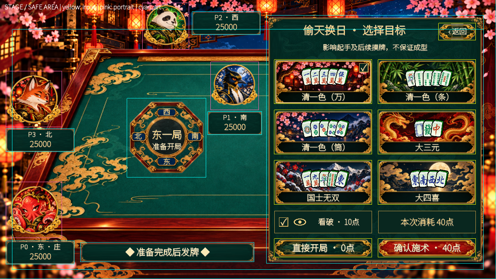
02-drawer-1280x720-bounds
位置与点击边界标注
 02-drawer-1280x720
02-drawer-1280x720
1280×720 · 实际窗口 GL · DRAWER
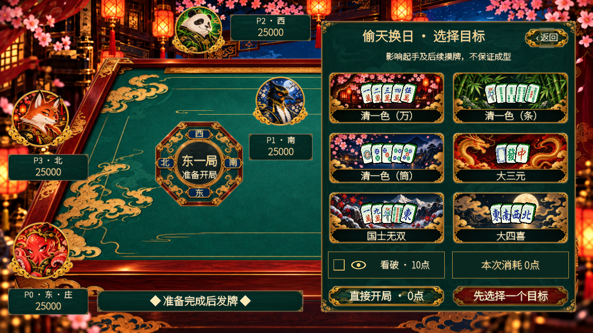
02b-drawer-unselected-1280x720
1280×720 · 实际窗口 GL · DRAWER
03-receipt-1280x720
1280×720 · 实际窗口 GL · RECEIPT
 04-playing-1280x720
04-playing-1280x720
1280×720 · 实际窗口 GL · PLAYING
drawer-1024x768-bounds
位置与点击边界标注
 drawer-1024x768
drawer-1024x768
1024×768 · 实际窗口 GL · DRAWER
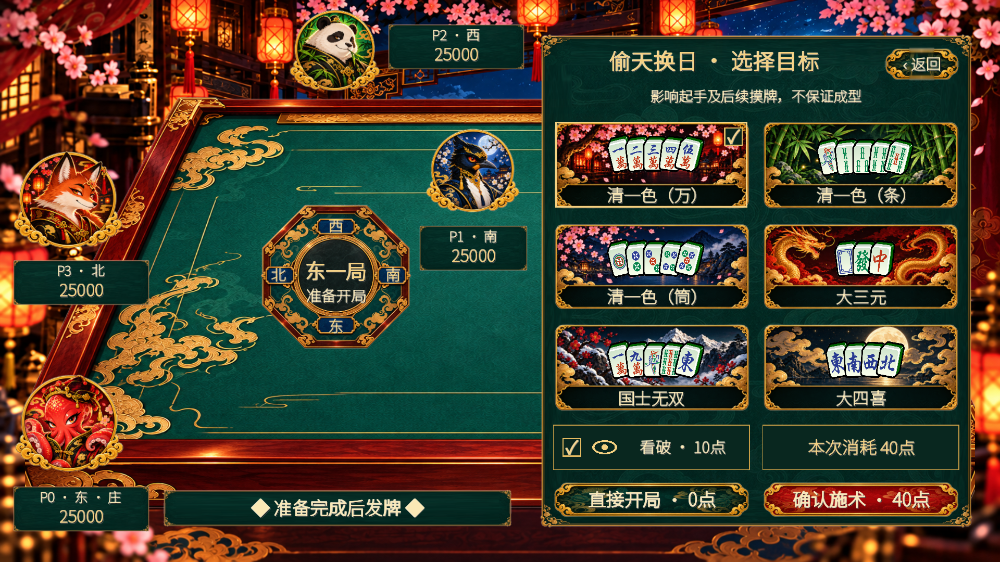
drawer-1280x720-fb1_5x
1280×720 · 离屏 GL · DRAWER
drawer-1280x800
1280×800 · 实际窗口 GL · DRAWER
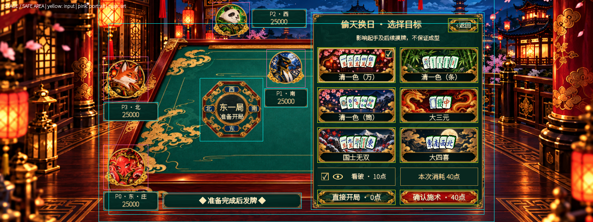
drawer-1600x600-bounds
位置与点击边界标注
 drawer-1600x600
drawer-1600x600
1600×600 · 实际窗口 GL · DRAWER
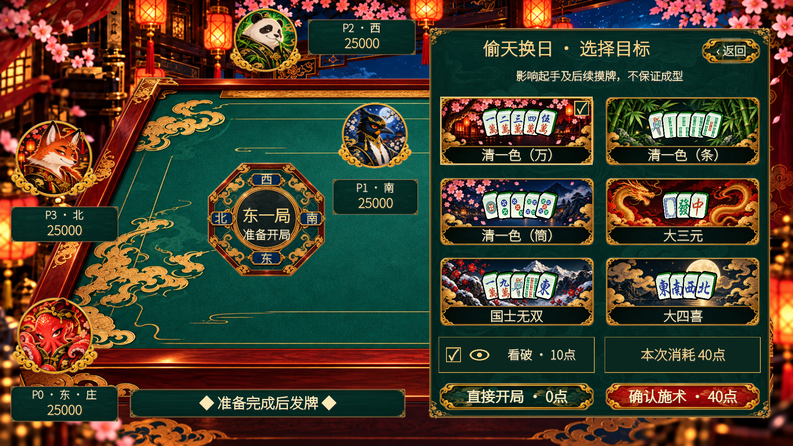
drawer-1920x1080
1920×1080 · 实际窗口 GL · DRAWER
 drawer-2560x1080
drawer-2560x1080
2560×1080 · 实际窗口 GL · DRAWER
drawer-3440x1440-offscreen
3440×1440 · 离屏 GL · DRAWER
 drawer-960x540-fb2x
drawer-960x540-fb2x
960×540 · 离屏 GL · DRAWER
 drawer-960x540
drawer-960x540
960×540 · 实际窗口 GL · DRAWER
drawer-animation-1280x720
1280×720 · 实际窗口 GL · DRAWER
drawer-animation-resized-1600x600
1600×600 · 实际窗口 GL · DRAWER
drawer-animation-resized-960x540
960×540 · 实际窗口 GL · DRAWER
 entry-safe-insets-1280x720-bounds
entry-safe-insets-1280x720-bounds
位置与点击边界标注
entry-safe-insets-1280x720
1280×720 · 实际窗口 GL · ENTRY
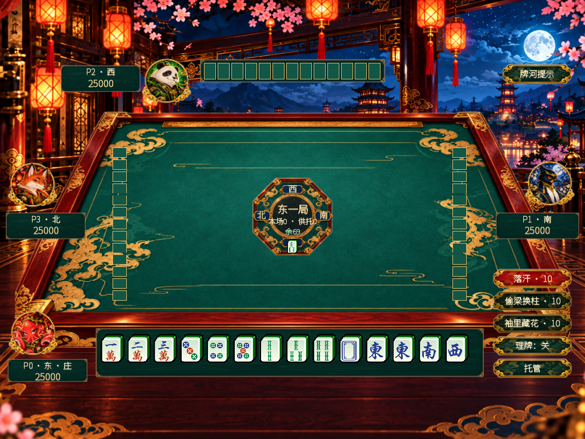
playing-1024x768
1024×768 · 实际窗口 GL · PLAYING
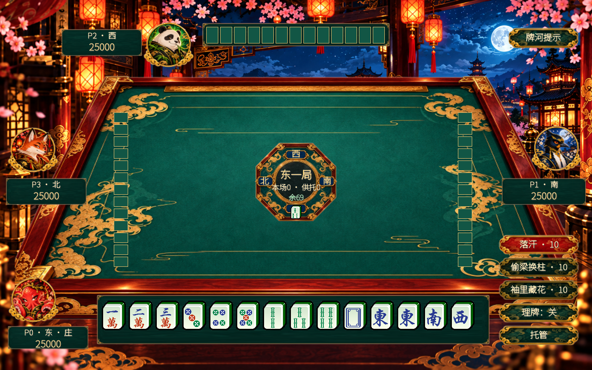
playing-1280x800
1280×800 · 实际窗口 GL · PLAYING
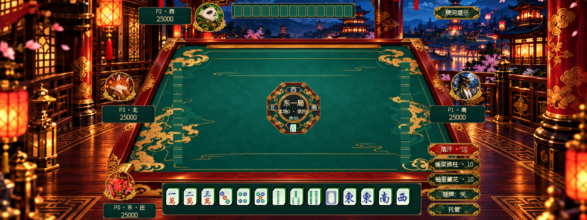
playing-1600x600
1600×600 · 实际窗口 GL · PLAYING
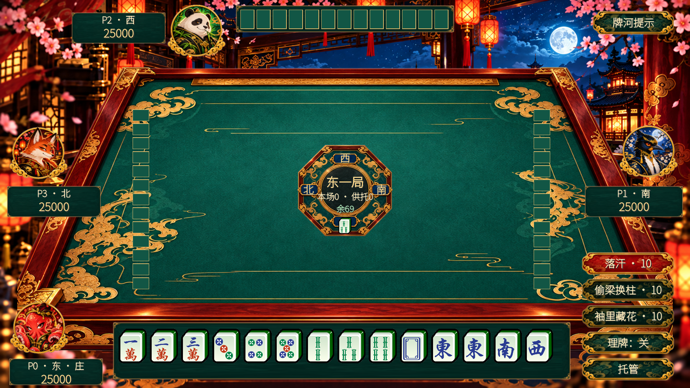
playing-1920x1080
1920×1080 · 实际窗口 GL · PLAYING
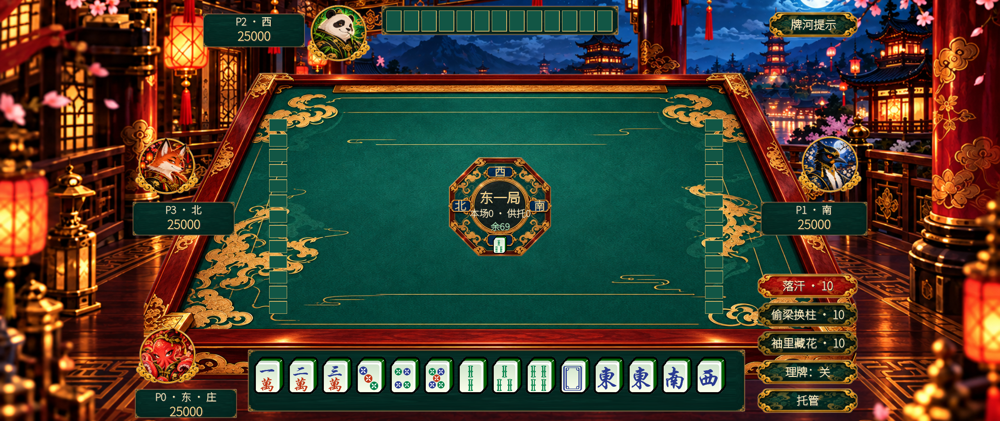
playing-2560x1080
2560×1080 · 实际窗口 GL · PLAYING
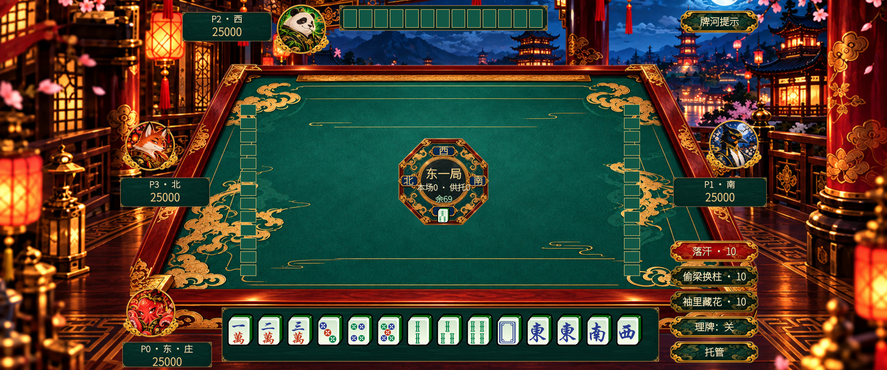
playing-3440x1440-offscreen
3440×1440 · 离屏 GL · PLAYING
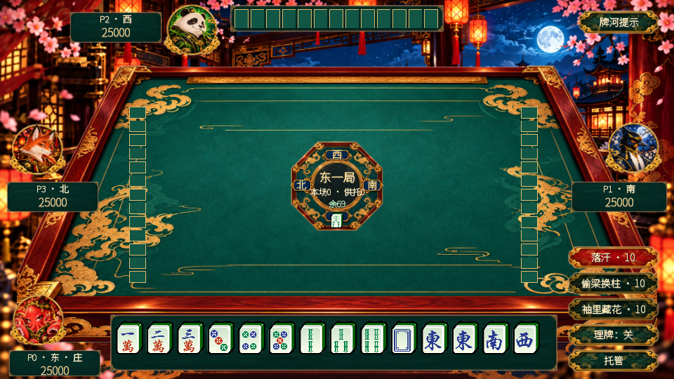
playing-960x540
960×540 · 实际窗口 GL · PLAYING
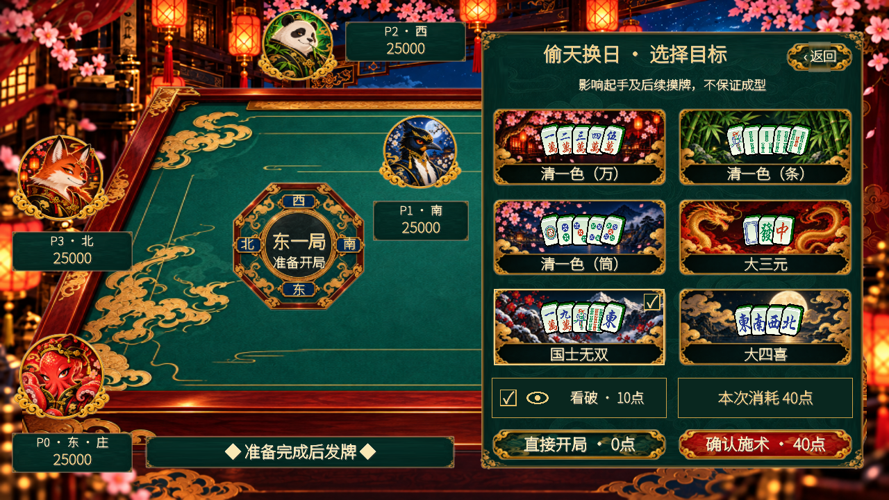
resize-00-1280x720
连续窗口缩放 / 状态保持
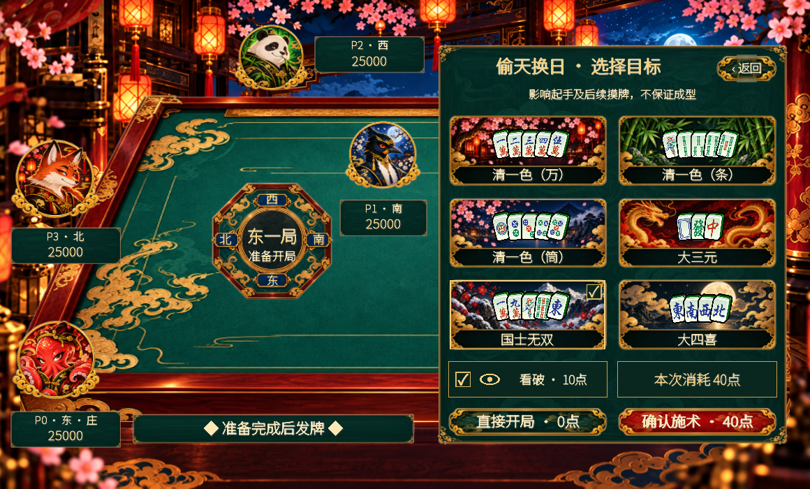
resize-01-1160x700
连续窗口缩放 / 状态保持
resize-02-1024x768
连续窗口缩放 / 状态保持
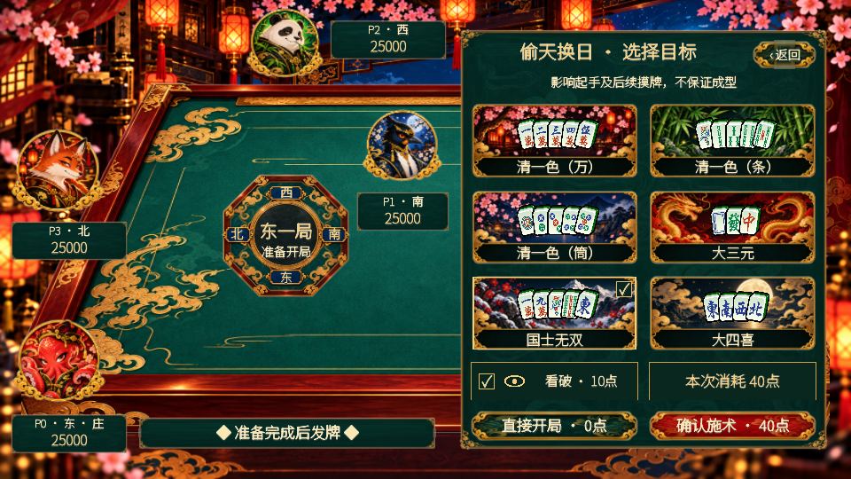
resize-03-960x540
连续窗口缩放 / 状态保持
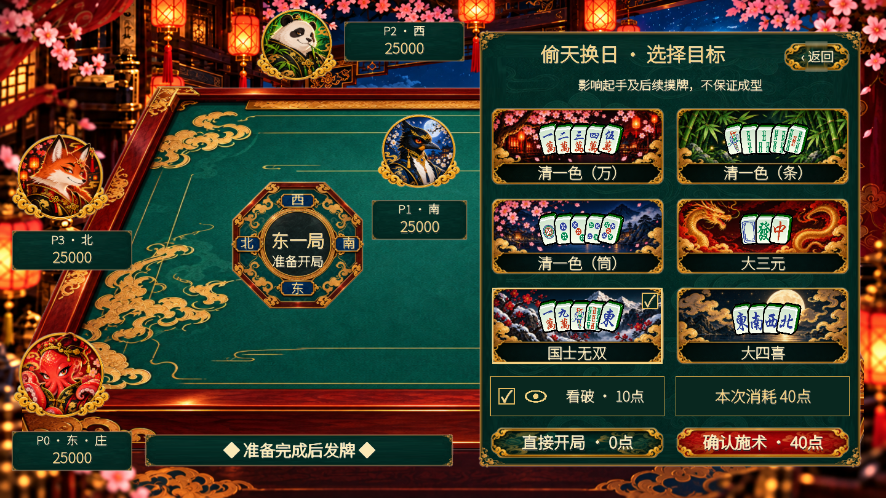
resize-04-1440x810
连续窗口缩放 / 状态保持
resize-05-1600x600
连续窗口缩放 / 状态保持
 resize-06-1280x720
resize-06-1280x720
连续窗口缩放 / 状态保持
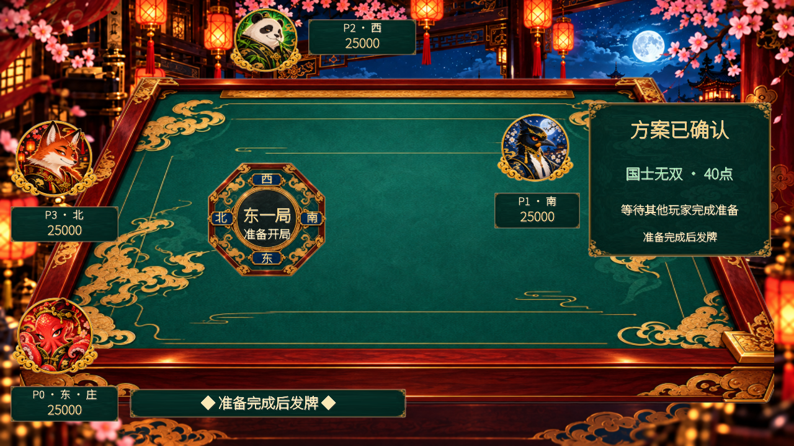
resize-07-confirmed
连续窗口缩放 / 状态保持
robustness-800x450
800×450 · 实际窗口 GL · DRAWER